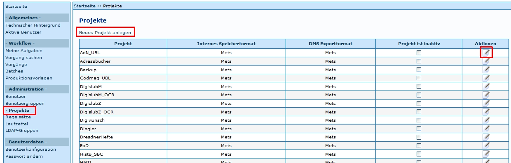
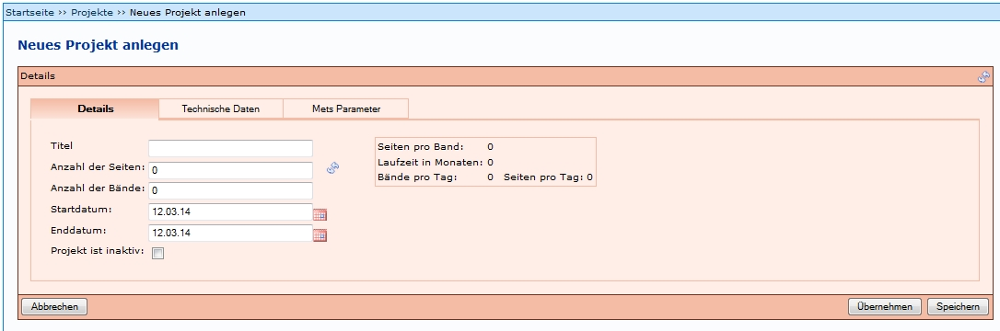
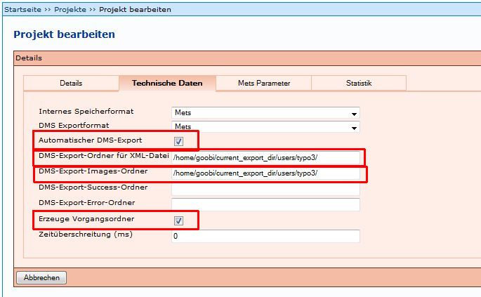
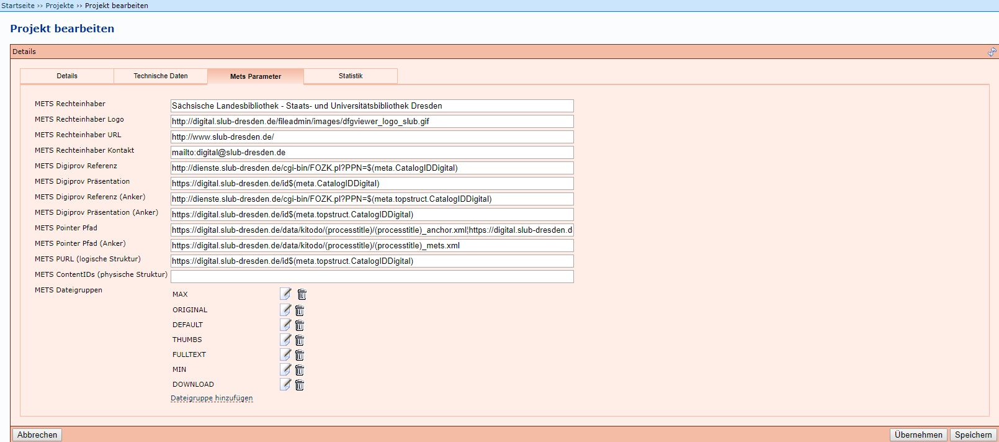
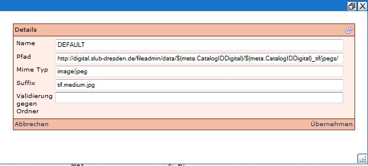
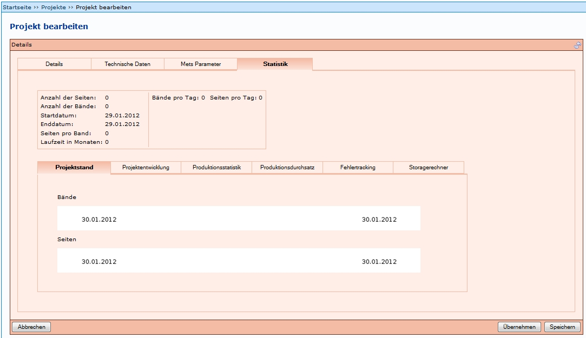

Einleitung
Projekte dienen der Verwaltung von Digitalisierungsprojekten. Um dies zu ermöglichen, sind mehrere Einstellungen notwendig. Darunter unter anderem die Speicherorte für die Metadaten und Images, die Bildung der PURL, die URL des Rechteinhabers, und weitere. Diese werden in den folgenden Abschnitten erläutert.
Die Einstiegsseite unter dem Menüpunkt Projekte bietet eine Übersicht über bereits vorhandene Projekte. Diese lassen sich in der Spalte Aktionen über den Button Bearbeiten  editieren. Über den Link Neues Projekt anlegen öffnet sich die Tabelle zur Definition eines neuen Projektes.
editieren. Über den Link Neues Projekt anlegen öffnet sich die Tabelle zur Definition eines neuen Projektes.

Neues Projekt anlegen
Die Angaben für ein neues Projekt sind auf mehrere Menüpunkte aufgeteilt, die im Folgenden einzeln erläutert werden:
- Details
- Technische Daten
- Mets Parameter
- Statistik
Bei den meisten Feldern empfiehlt es sich, sich an bestehenden Projekten (falls vorhanden) zu orientieren. Zudem muss beachtet werden, dass in der Konfigurationsdatei goobi_digitalCollections.xml die Projekte eingetragen müssen (siehe Installationsanleitung). Wenn dies nicht gemacht wird, werden keine Digitale Kollektionen beim Anlegen eines Vorgangs angezeigt. Da zumindest eine Kollektion gewählt werden muss, wäre das Anlegen des Vorgangs somit nicht möglich. Eine Beispiel goobi_digitalCollections.xml-Datei findet sich unter https://github.com/kitodo/kitodo-production/tree/1.11.x/Goobi/config.
Einige Angaben müssen in der sogenannten goobi_projects.xml-Datei hinterlegt sein und können nicht über das Frontend eingegeben werden. Erläuterungen zu der goobi_projects.xml-Datei finden sich unter Projekt XML Datei.
Es ist nicht möglich, allgemein gültige Feldbelegungen zu nennen. Diese hängen von den Bedingungen in den jeweiligen Institutionen ab. In dieser Dokumentation können Inhalte nur beispielhaft genannt werden.
Details
Hier sind die Parameter für jedes Projekt einzutragen. Besondere Relevanz besitzt die Angabe des Titels. Dieser dient später bei der Verknüpfung zwischen Benutzer, Produktionsvorlage und Projekt zur Identifizierung des Projektes. Der Titel sollte keine Leerzeichen oder Umlaute enthalten, um spätere Probleme im Dateisystem zu vermeiden (Abarbeitung von Batch-Scripten o.ä.).

Technische Daten

Folgende Felder können belegt werden:
Internes Speicherformat
Dies gibt das Format an, welches zur internen Speicherung in Kitodo.Production angewendet wird. Es ist möglich zwischen Mets und XStream zu wählen. Siehe Anhang unten zur Erläuterung der Formate.
DMS Exportformat
Dies gibt das Format an, welches zum Export aus Kitodo.Production angewendet wird. Siehe Anhang unten zur Erläuterung der Formate.
Automatischer DMS-Export
Wenn dieses Feld mit einem Haken aktiviert wird, wird der Export automatisch ausgelöst, sofern alle weiteren Einstellungen korrekt vorgenommen wurden.
DMS-Export-Ordner für XML-Datei
Hier wird der Verzeichnis-Pfad zu dem Speicherort eingetragen, an dem die XML-Datei (Metadatendatei) nach dem Export gespeichert wird.
DMS-Export-Images-Ordner
Hier wird der Verzeichnis-Pfad zu dem Speicherort eingetragen, an dem die Images nach dem Export gespeichert werden.
DMS-Export-Success-Ordner
Es gibt bislang keine Informationen über diesen Ordner. Wenn Institutionen diesen nutzen, kann dies hier ergänzt werden. Dieses Feld kann leer gelassen werden.
DMS-Export-Error-Ordner
Es gibt bislang keine Informationen über diesen Ordner. Wenn Institutionen diesen nutzen, kann dies hier ergänzt werden. Dieses Feld kann leer gelassen werden.
Erzeuge Vorgangsordner
Wenn dieses Feld mit einem Haken aktiviert wird, wird im definierten "DMS-Export-Ordner für XML-Datei" oder "DMS-Export-Images-Ordner" noch ein Unterverzeichnis, benannt nach dem Prozesstitel, erzeugt.
Zeitüberschreitung (ms)
Hier kann festgelegt werden, wie lange ein Export maximal laufen kann.
In der SLUB werden unter Technische Daten nur die Felder Internes Speicherformat und DMS Exportformat mit Mets ausgefüllt.
Wenn die Vorgänge dieses Projekts automatisch exportiert werden sollen, muss
- bei Automatischer DMS-Export ein Haken gesetzt werden
- bei Erzeuge Vorgangsordner ein Haken gesetzt werden
- bei DMS-Export-Ordner für XML-Datei der entsprechende Pfad eingetragen werden
- bei DMS-Export-Images-Ordner der entsprechende Pfad eingetragen werden
Siehe auch: Export.
METS Parameter

Die Inhalte der Felder sind für den METS-Export notwendig und müssen in jeder Institution bestimmt werden. Sie können aber für weitere Projekte nachgenutzt werden, wenn sich zum Beispiel die Rechtesituation nicht ändert.
Folgende Felder können belegt werden:
METS Rechteinhaber
Hier wird der offizielle Name der Institution eingetragen, die die Rechte an den Dokumenten hält.
METS Rechteinhaber Logo
Hier wird der Verzeichnis-Pfad zu dem Speicherort eingetragen, an dem das Logo des Rechteinhabers vorgehalten wird. Dieser Pfad kann auch dafür genutzt werden, dass im DFG-Viewer das Logo der Institution angezeigt wird, die das Digitalisat bereitstellt.
METS Rechteinhaber URL
Hier wird die URL der Webseite des Rechteinhabers eingetragen.
METS Rechteinhaber Kontakt
Hier wird eine gültige E-Mail-Adresse des Rechteinhabers eingetragen.
METS Digiprov Referenz
Hier wird der Pfad eingegeben, der auf den Nachweis des Digitalisats führt. Dies kann zum Beispiel ein Katalog sein.
Der Pfad kann aus zwei Elementen erstellt werden: Einem festen Prefix (zum Beispiel: http://dienste.slub-dresden.de/cgi-bin/FOZK.pl?PPN=) und einer Variablen, die automatisch durch den eindeutigen Identifier (zum Beispiel: $(meta.topstruct.CatalogIDDigital)) ersetzt werden kann. Der Identifier besteht in diesem Beispiel aus der ID der Titelaufnahme im genutzten Katalog (SWB).
METS Digiprov Präsentation
Hier wird der Pfad eingegeben, der zu dem Digitalisat führt.
Der Pfad kann aus zwei Elementen erstellt werden: Einem festen Prefix (zum Beispiel: http://digital.slub-dresden.de/id) und einer Variablen, die automatisch durch den eindeutigen Identifier (zum Beispiel: meta.CatalogIDDigital) ersetzt werden kann. Der Identifier besteht in diesem Beispiel aus der ID der Titelaufnahme im genutzten Katalog (SWB).
METS Digiprov Referenz (Anker)
Hier wird der Pfad eingegeben, der auf den Nachweis der Gesamtheit des Digitalisats (Anker) führt. Dies kann zum Beispiel ein Katalog sein.
In der SLUB wird dieser Pfad zusammengesetzt wie derjenige in METS Digiprov Referenz.
METS Digiprov Präsentation (Anker)
Hier wird der Pfad eingegeben, der auf die Gesamtheit des Digitalisats (Anker) führt. Dies kann zum Beispiel ein Katalog sein.
In der SLUB wird dieser Pfad zusammengesetzt wie derjenige in METS Digiprov Präsentation.
METS Pointer Pfad
Hier wird der Pfad eingegeben, der in der meta.xml-Datei eines Bandes in dem Element <mets:mptr> in <mets:structMap TYPE="LOGICAL"> eingetragen wird. Dies muss der Pfad zur meta_anchor.xml sein, um die Verknüpfung zur meta_anchor.xml-Datei herzustellen.
Der Pfad wird zusammengesetzt aus einem Prefix (zum Beispiel: http://digital.slub-dresden.de/fileadmin/data/), einer Variablen, die automatisch durch den eindeutigen Identifier (zum Beispiel: meta.CatalogIDDigital) ersetzt werden kann und einem Suffix (_anchor).
Beispiel SLUB:
http://digital.slub-dresden.de/fileadmin/data/20050662Z/20050662Z_anchor.xml"/
Je nach Institution wird dieser Link unterschiedlich gebildet.
METS Pointer Pfad (Anker)
Hier wird der Pfad eingegeben, der in der meta_anchor.xml-Datei eines Bandes in dem Element <mets:mptr> in <mets:structMap TYPE="LOGICAL"> eingetragen wird. Dies muss der Pfad zur meta.xml sein, um die Verknüpfung zur jeweiligen meta.xml-Datei herzustellen.
Der Pfad wird zusammengesetzt aus einem Prefix (zum Beispiel: http://digital.slub-dresden.de/fileadmin/data/) und einer Variablen, die automatisch durch den eindeutigen Identifier (zum Beispiel: meta.CatalogIDDigital) ersetzt werden kann.
Beispiel SLUB:
http://digital.slub-dresden.de/fileadmin/data/20050662Z/20050662Z.xml"/
Je nach Institution wird dieser Link unterschiedlich gebildet.
METS PURL (logische Struktur)
Hier wird die Struktur der PURL der Digitalisate festgelegt. Diese besteht aus einem zu definierenden Prefix (zum Beispiel: http://digital.slub-dresden.de/id) und einem automatisch ergänzten eindeutigen Identifier (zum Beispiel: $(meta.CatalogIDDigital)). Der Identifier besteht in diesem Beispiel aus der ID der Titelaufnahme im genutzten Katalog (SWB).
METS ContentIDs (physische Struktur)
Dazu liegen keine gesicherten Erkenntnisse vor.
Beispiel: Hier zum Beispiel in dem Bereich Rechte (RIGHTS):
<mets:rightsMD ID="RIGHTS">
<mets:mdWrap MDTYPE="OTHER" MIMETYPE="text/xml" OTHERMDTYPE="DVRIGHTS">
<mets:xmlData>
<dv:rights>
<dv:owner>
Sächsische Landesbibliothek - Staats- und Universitätsbibliothek Dresden
</dv:owner>
<dv:ownerLogo>
http://digital.slub-dresden.de/fileadmin/images/dfgviewer_logo_slub.gif
</dv:ownerLogo>
<dv:ownerSiteURL>
http://www.slub-dresden.de/
</dv:ownerSiteURL>
<dv:ownerContact>
mailto:sebastian.meyer@slub-dresden.de
</dv:ownerContact>
</dv:rights>
</mets:xmlData>
</mets:mdWrap>
</mets:rightsMD>
Beispiel: Hier zum Beispiel in den Bereich Digitale Herkunftsangaben (DIGIPROV):
<mets:digiprovMD ID="DIGIPROV">
<mets:mdWrap MDTYPE="OTHER" MIMETYPE="text/xml" OTHERMDTYPE="DVLINKS">
<mets:xmlData>
<dv:links>
<dv:reference>
http://dienste.slub-dresden.de/cgi-bin/FOZK.pl?PPN=38192260X
</dv:reference>
<dv:presentation>
http://digital.slub-dresden.de/id38192260X-19030000
</dv:presentation>
</dv:links>
</mets:xmlData>
</mets:mdWrap>
</mets:rightsMD>
Weiterführende Informationen über METS finden sich unter METS: Überblick und Anleitung. In dem Bereich Verwaltungsangaben (Administrative Metadata) werden die Elemente <rightsMD> und <digiprovMD> vorgestellt.
METS Dateigruppen
Unter Mets Dateigruppen werden Angaben zur Bereitstellung der Images, beziehungsweise des Volltextes in der Präsentation eingegeben. Diese Dateigruppen orientieren sich an den DFG Praxisregeln. Es handelt sich um diese:
- DEFAULT
- DOWNLOAD
- FULLTEXT
- MAX
- MIN
- ORIGINAL
- THUMBS
Jede Dateigruppe muss mit zusätzlichen Informationen angereichert werden:
Name
In diesem Feld wird der Name der Dateigruppe eingetragen. Dieser sollte die Art der Gruppe beschreiben, wie zum Beispiel THUMBS für Vorschaubilder oder FULLTEXT für Volltext-Dateien.
Pfad
In diesem Feld wird der Pfad eingetragen, der den Ort benennt, an dem die Dateien gespeichert werden. Dies ist notwendig, um in der METS-Datei die Dateiverlinkungen abbilden zu können. Der Identifier muss hier als Variable angegeben werden (zum Beispiel $(meta.CatalogIDDigital))!
Mime Typ
In diesem Feld wird angegeben um welche Datei es sich handelt. "image/jpeg" zum Beispiel gibt an, dass es sich um eine Bilddatei im JPG-Format handelt.
Suffix
In diesem Feld wird eingetragen, wie der Pfad enden soll, zum Beispiel "tif.medium.jpg"
Validierung gegen Ordner
Für den Inhalt dieses Felds gibt es keine gesicherten Erkenntnisse.
In der METS-Datei sieht das Ergebnis zum Beispiel so aus:
Beispiel: Dateigruppe FULLTEXT:
<mets:file ID="FILE_0096_FULLTEXT" MIMETYPE="text/xml">
<mets:FLocat LOCTYPE="URL" xlink:href="http://digital.slub-dresden.de/fileadmin/data/351392440/351392440_ocr/00000096.xml"/>
</mets:file>
Beispiel: Dateigruppe MEDIUM:
<mets:file ID="FILE_0046_DEFAULT" MIMETYPE="image/jpeg">
<mets:FLocat LOCTYPE="URL" xlink:href="http://digital.slub-dresden.de/fileadmin/data/38192260X-19030000/38192260X-19030000_tif/jpegs/00000046.tif.medium.jpg"/>
</mets:file>
Beispiel: Dateigruppe ORIGINAL:
<mets:file ID="FILE_0113_ORIGINAL" MIMETYPE="image/jpeg">
<mets:FLocat LOCTYPE="URL" xlink:href="http://digital.slub-dresden.de/fileadmin/data/364572701-19231000/364572701-19231000_tif/jpegs/00000096.tif.original.jpg"/>
</mets:file>
Über Dateigruppe hinzufügen kann eine Gruppe hinzugefügt werden. Über das Symbol  lässt sich eine vorhandene Gruppe bearbeiten, bzw. über das Symbol
lässt sich eine vorhandene Gruppe bearbeiten, bzw. über das Symbol  löschen. Die Angaben müssen in jeder Einrichtung festgelegt werden. Es könnte zum Beispiel so aussehen:
löschen. Die Angaben müssen in jeder Einrichtung festgelegt werden. Es könnte zum Beispiel so aussehen:

Statistik

Unter Statistik lassen sich unterschiedliche statistische Daten eines Projektes auswerten.
Anhang: Informationen zu Datenformate aus dem früheren Goobi Wiki
Goobi unterstützt in der Version 1.5.1. insgesamt drei unterschiedliche Dateiformate. Diese können sowohl für die interne Speicherung in Goobi verwendet werden als auch für den Export in das Dokumenten-Management-System.
RDF
Beim RDF-Format handelt es sich um ein älteres proprietäres XML-Format, das sämtliche Struktur- und Metadaten sowie die Paginierungen weitestgehend abbilden kann. Problematisch ist dieses Format lediglich im Hinblick auf spezielle Paginierungssequenzen. Insbesondere bei der Blatt- und Spaltenzählung können die besonderen Zählweisen nicht durch dieses Format gespeichert werden, so dass die Paginierungssequenzen verloren gehen. Die Speicherung von der verbreiteten Seitenzählung ist jedoch vollkommen unproblematisch durch RDF.
Update Februar 2016: Dies ist obsolet und soll sollte nicht genutzt werden. Er diente früher dem Export von AgoraXML. Siehe auch Regelsatz XML Datei
xStream
Das Format xStream ist xml Serialisierung von kompletten Java-Objekten. Bei diesem Format handelt es sich um eine vollständige Speicherung aller Informationen, die zur Struktur- und Metadatenerfassung sowie zur Paginierung erfasst wurden, ohne dass diese in ein spezielles standardisiertes Format überführt werden. Das Format xStream ist daher für manuelle Änderungen und Nachnutzbarkeit in anderen Systemen am wenigsten geeignet. Es sollte ausschließlich für die interne Speicherung verwendet werden. Das Format wir in einer der nächsten Versionen deaktiviert.
METS
Das METS-Format wurde mit Goobi 1.5.1 erstmals vollständig sowohl für den DMS-Import als auch für die interne Speicherung eingeführt. Dieses verbreitete Format ermöglicht die maximale Nachnutzbarkeit in anderen Systemen. Darüber hinaus können sämtliche Informationen der Struktur- und Metadaten sowie der Paginierungssequenzen inklusive der FileGroups durch dieses Format abgebildet werden. Es ist das für den DMS-Import am besten geeignete Format. Auch für eine interne Speicherung in Goobi wird die Nutzung des METS-Formates empfohlen.
Weitere Informationen
Tutorial: Projekt anlegen